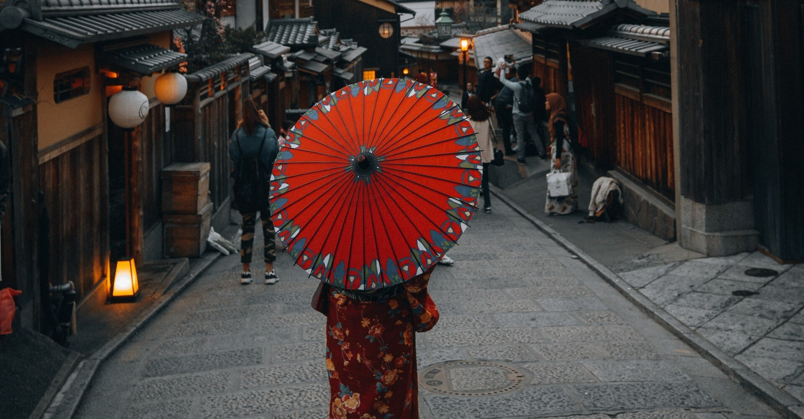

湿り気をたっぷりと含んだ風が、境内に紅葉を降らせている。
昨日までは快晴続きだったのに、今日は太陽は顔を出さない。まるで神様が僕にやきもちを焼いているようだけど、そんなことはここでは声に出して言えない。
会社の関係で静岡から新潟に越して二週間、まず驚いたのは神社の数だ。毎朝、日課であるランニングをしていると、いたるところに神社が目につく。
どうやら新潟県は神社の数が全国一だそうだ。もちろん、地元の人はそんなこと百も承知で生きていそうだから、「さすが新潟県だね」という顔で僕は黙って参拝する。
そんな神社で起きたある出来事。
その日は上司に理不尽な怒られ方をされ、久々に沸き起こったあまりよく思われない衝動を秘めつつも、走ってストレスを解消しようと帰宅の車の中で決めていた。
自宅に着き、そそくさとランニングウェアに袖を通す。耳にかけるタイプのイヤホンを装着し、僕は外に出た。
夏の終わりを知らせる冷気をまとった風を追い風にして走る。やがて、遠くでぼんやり光る灯りが目に留まった。赤い鳥居の下に浮かぶそれが気になり、方向を鳥居に向けて走り出す。そしたら、その灯りは僕を見計らったように上昇を始めた。どうやら拝殿へ続く階段を上っているようだ。
僕もほどなくして鳥居をくぐり、無数のように思える階段を上る。段飛ばしはしないで、着実に一段一段を踏みしめる。その行為がサラリーマンの生き方のように思えて、途中空しくなった。
ふと顔を見上げれば、階段の終わりが見えていた。
もうどれくらいこんなことをしているのだろう。闇夜に無心で階段を駆け上る男なんて、端から見れば怖いものなのだろうか。
最後の一段を上りきり、ようやく拝殿前に着いた。
地面に座りこみ、いつしか階段を上りきることが目標になっていた男を見下ろすのは、あの灯りを放っていた女性だった。
「こんばんは。大丈夫ですか？」
そう言われ、手で大丈夫のジェスチャーをしたつもりだが彼女には伝わっていない。すると、僕の顔を覗くように顔を近づけてきた。目は見れなかったが、微かに香る心地のよい匂いは余計僕の心拍数を上げた。
「どこかでお会いしたことありますか？」
顔はその手にぶら下げられている提灯で分かった。
「なぜ提灯なのか？」という疑問は置いといて、僕は依然座ったまま彼女を見上げる。確かに言われてみれば、どこかで会ったことがあるようにも思えた。
しかし、思い出せない。どうすべきか逡巡していると、彼女はイヤホンから漏れ出ていた曲名を口にした。
「よくご存じで。かなりマニアックな部類だと思っていたんですが」
「私も好きなんです。ヘビーメタル」
その日から僕の日課は見事なまでに朝から夜にシフトした。理由はほかでもない。彼女ともっと話がしたかったから。
あの神社まで走っては彼女と会い、走っては連絡先を聞くも断れ、走っては君の古風すぎる生活を聞いた。疑問は彼女に会うたびどんどん膨らむが、態度には見せないようにする。
「今度、ランチでもしませんか？」
半年が経った頃、そう誘うと彼女は二つ返事で「いいですよ」と答えた。どうやら彼女への想いを行動に移した甲斐あって、僕に興味が湧いてきたらしい。
その夜、約束を取りつけた興奮を中々抑えられずネットサーフィンをしていたら、偶然ある記事を見つけた。
そこには、深夜に特定の神社に出没する艶やかな女性に引っかかった男は狐に化かされ二度と人間に戻ることはないと書かれていた。
今時そんなこと信じるかよと思いつつ、記事を読み進めるとあの神社の写真がある。近頃よく出るとして読者に注意喚起し記事は終わっている。
確かに彼女の鼻は僕より高いし、顔の輪郭もシャープ。つまり、彼女は狐顔だ。
でも、きっと彼女は人間。不思議なほど自信があるんだ。僕の人の目を見る力は群を抜いているのだから。
約束の日は朝から雨だった。待ち合わせの時刻ちょうどに彼女は姿を現した。
傘を差していない彼女は僕からすっと傘を取って拝殿の下に入り、無言で手招きする。
僕も拝殿へ足を向けた瞬間、雨脚は急速に弱まり太陽が雲間から顔を覗かせた。その眩さに片目を瞑りつつ、「晴れた！」と自分の声の大きさに驚きながらも彼女を見る。
でも、彼女はすでにいなかった。駆け寄っても跡形もなかった。
首を傾げ「やっぱり君は……」と考えた。いや、そんなはずはない。君は人間。僕が覚えている。僕らは人間同士。
すると、また雨が降り出した。乱高下するジェット機のような不安定な天気雨だ。
傘とともにいなくなってしまったので、仕方なしに拝殿で雨宿りをしていると、誰かが小走りでこちらに駆けてきた。突然の雨に降られた様子の若い女の子だった。
僕は「大丈夫ですか？」と声をかけていた。その子の何も持っていない両手を見て、どうやら散歩の途中かなんかで雨に降られたのかもしれないと思った。
「大丈夫です」と優しい声で返されたが、長い髪に含まれた水分量を見て僕はいてもたってもいられず、ジーンズの後ろポケットに入っているハンカチに手を伸ばす。そして、「どこかでお会いしたことありますか？」と口走った。
驚きのあまり、僕は本当のことすら口にできない。会ったことなどないのに、僕は無性にその子と喋りたい気分になっていた。
よく見るとその子は僕なんかよりもよっぽど人間らしい、健康的な女の子だった。
生え始めた尻尾に気取られないよう、彼女にそっとハンカチを差し出した。